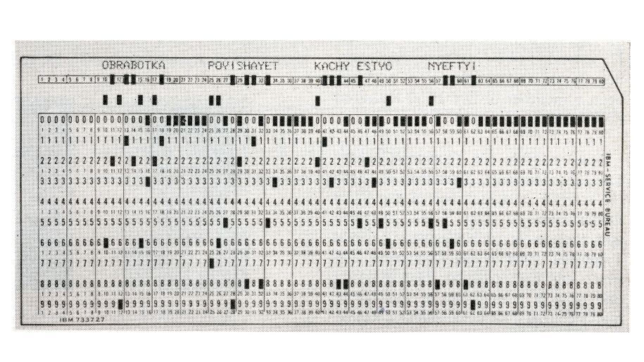
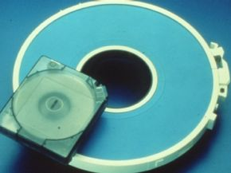
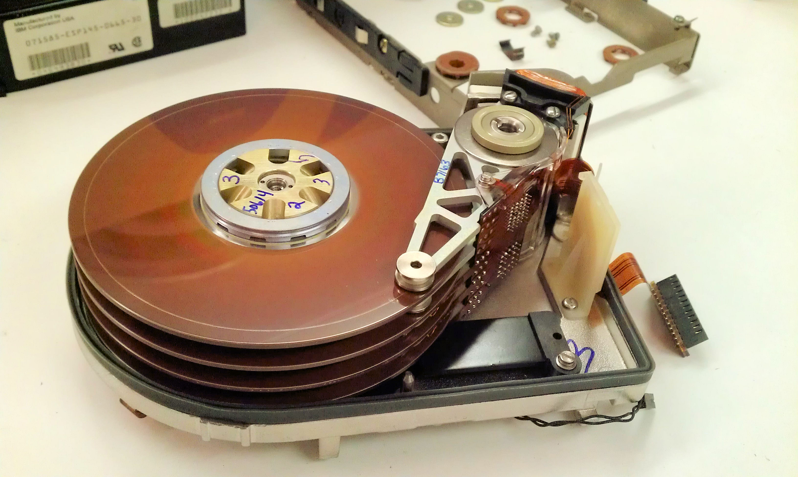
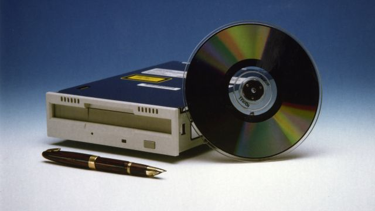
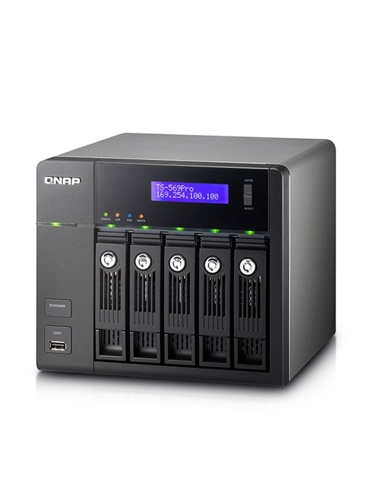

Cartão perfurado
No final do século XIX, Herman Hollerith criou um método de armazenamento de dados baseado em cartões perfurados. Esses cartões eram usados para registrar informações por meio de perfurações em padrões específicos e foram amplamente utilizados até meados do século XX.
Fita Magnética
As fitas magnéticas foram desenvolvidas na Alemanha na década de 1930, originalmente inventadas por Fritz Pfleumer para armazenar áudio. No entanto, seu uso para armazenamento de dados só se popularizou nos anos 1950. Tornaram-se um meio eficiente para guardar grandes volumes de informações, sendo amplamente utilizadas em mainframes e para backups. Ainda hoje, as fitas magnéticas são empregadas em alguns setores para arquivamento de longo prazo devido à sua durabilidade e baixo custo.
Discos Rígidos (HDD)
O primeiro disco rígido foi desenvolvido pela IBM em 1956. Os HDDs utilizam discos magnéticos giratórios para armazenar e acessar dados. Com o passar do tempo, sua capacidade aumentou significativamente, tornando-se um dos principais meios de armazenamento para computadores pessoais e servidores.
Introduzidos nos anos 1970, os disquetes foram um dos primeiros meios portáteis de armazenamento digital. Inicialmente tinham capacidade de 8 polegadas e, posteriormente, foram reduzidos para 5,25 e 3,5 polegadas. Foram amplamente utilizados até o início dos anos 2000, quando foram substituídos por mídias mais modernas.
CDs, DVDs e Blu-ray
Nos anos 1980, os CDs (Compact Discs) revolucionaram o armazenamento de dados e música digital. Posteriormente, os DVDs (Digital Versatile Discs) trouxeram maior capacidade, seguidos pelos discos Blu-ray, que permitem armazenar vídeos em alta definição.
Pendrives e Cartões de Memória

Com o avanço da tecnologia de armazenamento em estado sólido, os pendrives e cartões de memória se tornaram populares devido à sua portabilidade, velocidade e capacidade crescente.
SSDs (Solid State Drives)

Os SSDs surgiram como uma alternativa aos HDDs, oferecendo maior velocidade, resistência e eficiência energética. Eles não possuem partes móveis, o que reduz o risco de falhas mecânicas e melhora o desempenho dos dispositivos que os utilizam.
Armazenamento em Nuvem
Atualmente, o armazenamento em nuvem permite salvar dados remotamente em servidores acessíveis via internet. Esse método oferece maior flexibilidade, segurança e escalabilidade, sendo amplamente utilizado por empresas e usuários domésticos.